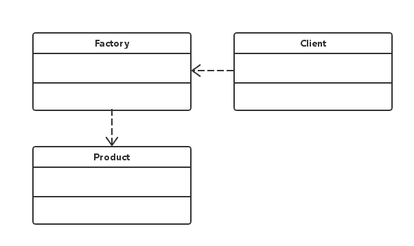
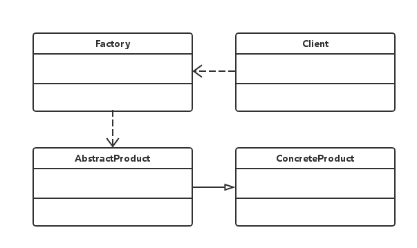

设计模式速谈：二、简单工厂模式
今天要介绍的是属于“创建型”设计模式之一的“简单工厂模式”。顾名思义，这个模式的整体思路十分的简单，但作为设计模式它并不属于 GOF23（一本设计模式的经典著作，一共有23种设计模式） 中的一种。但作为学习设计模式的开篇，“简单工厂模式”再合适不过。
“简单工厂模式”又叫做“静态工厂方法”，它是由一个工厂对象决定创建出哪一种产品类的实例。若要进行详细区分的话，可以分为两种：
- -只有一个产品对象的简单工厂模式；
- -带有一个抽象产品的简单工厂模式：
下面给出了这两种具体简单工厂模式的 UML 类图。
1、只有一个产品对象的简单工厂模式：

如下所示的类图中“虚线”的部分表示两个类之间的的“依赖关系”，其中用户（Client）使用工厂（Factory）来“生产”产品（Product），这里的产品（Product）是固定不变的，即：用该工厂只能“生产”出特定一种类型的产品。示例代码如下所示：
// Factory.java；
public class Factory {
// “工厂”类直接返回一个“产品”的实例；
public static Product createProduct() {
return new Product();
}
}
// Client.java；
public class Client {
// “客户”类使用“工厂”类来生产“产品”；
public static void main(String[] args) {
Factory factory = new Factory();
// 调用“工厂”的生产方法；
Product product = factory.createProduct();
System.out.println(product.getPrice());
}
}
// Product.java；
public class Product {
// “产品”类，负责包装产品的所有信息；
public Product() {}
private double price = 9.9;
public double getPrice() {
return this.price;
}
}
2、带有一个抽象产品的简单工厂模式：

基于前一种模式，只要我们稍加改进便会形成另一种类型的“简单工厂模式”，这里我们将具体的“产品”变为抽象的“产品”，即所有的具体产品均继承自抽象产品类型。这样在“工厂”内部，我们便可以根据“客户”的不同需求来创建不同的“产品”。示例代码如下所示：
// Factory.java；
public class Factory {
public static AbstractProduct createProduct(String key) {
// 根据客户的选择，生产不同的“产品”；
if (key == "ConcreteProductA") {
return new ConcreteProductA();
} else {
return new ConcreteProductB();
}
}
}
// Client.java；
public class Client {
public static void main(String[] args) {
Factory factory = new Factory();
// 客户选择需要“生产”的产品；
ConcreteProductA productA = (ConcreteProductA) factory.createProduct("ConcreteProductA");
AbstractProduct productB = factory.createProduct("ConcreteProductB");
System.out.println(productA.getPrice());
System.out.println(productB.getPrice());
}
}
// AbstractProduct.java；
public interface AbstractProduct {
// 抽象出的产品接口；
double getPrice();
}
// ConcreteProductA.java；
public class ConcreteProductA implements AbstractProduct {
// 具体产品类 A；
public ConcreteProductA() {}
private double price = 9.9;
public double getPrice() {
return this.price;
}
}
// ConcreteProductB.java；
public class ConcreteProductB implements AbstractProduct {
// 具体产品类 B；
public ConcreteProductB() {}
private double price = 10.1;
public double getPrice() {
return this.price;
}
}
至于对该设计模式的优缺点进行分析，我认为是完全没有必要的。每一种模式都有着其自己所擅长的场景。“具体项目具体分析”才是选择“设计模式”最好的方式。
评论 | Comments